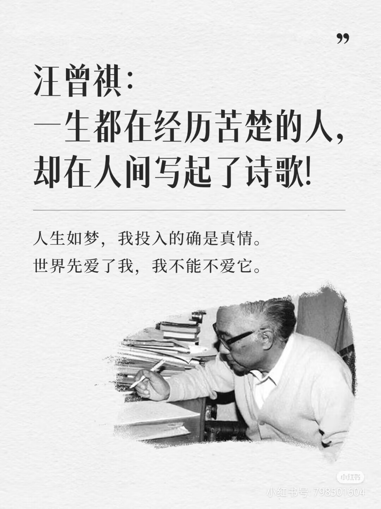
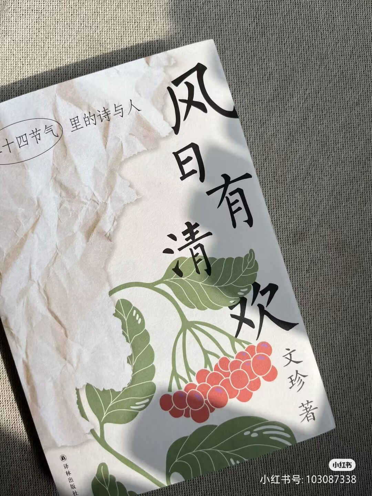
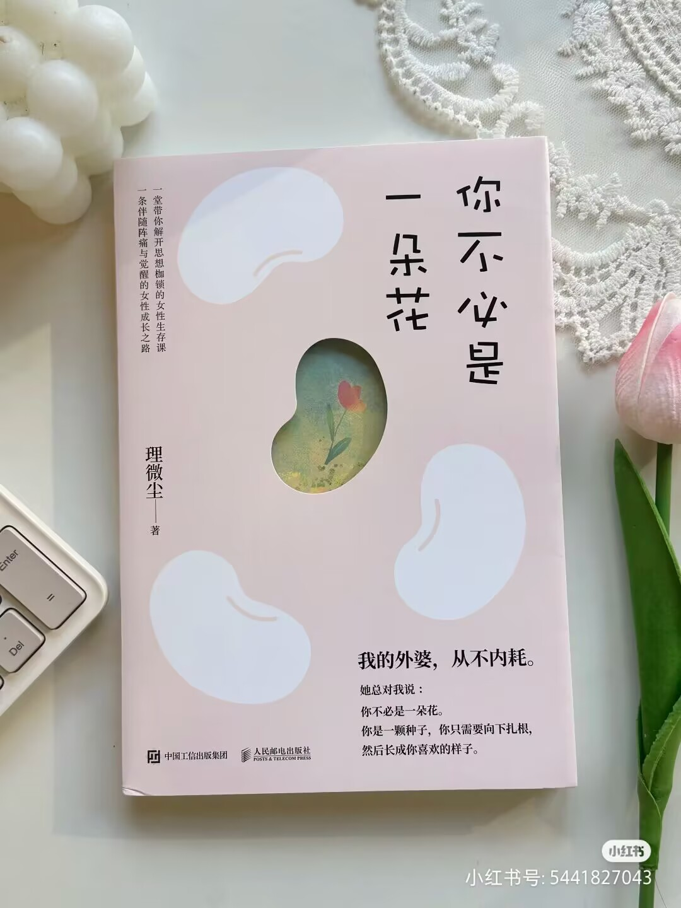
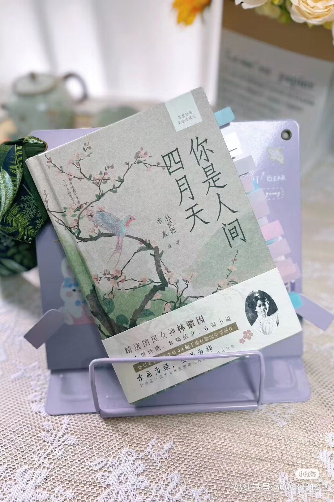
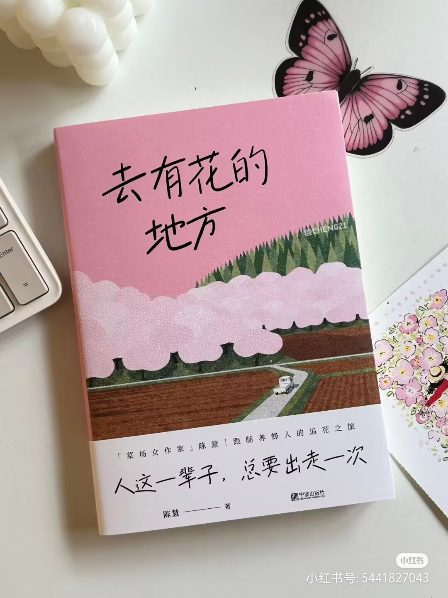
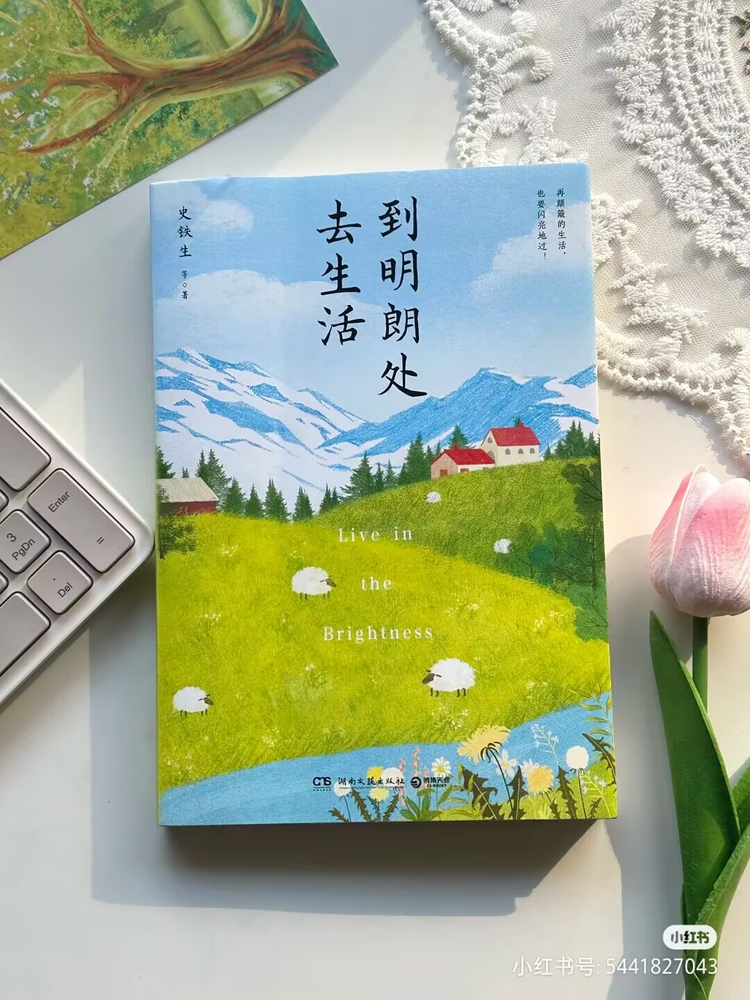
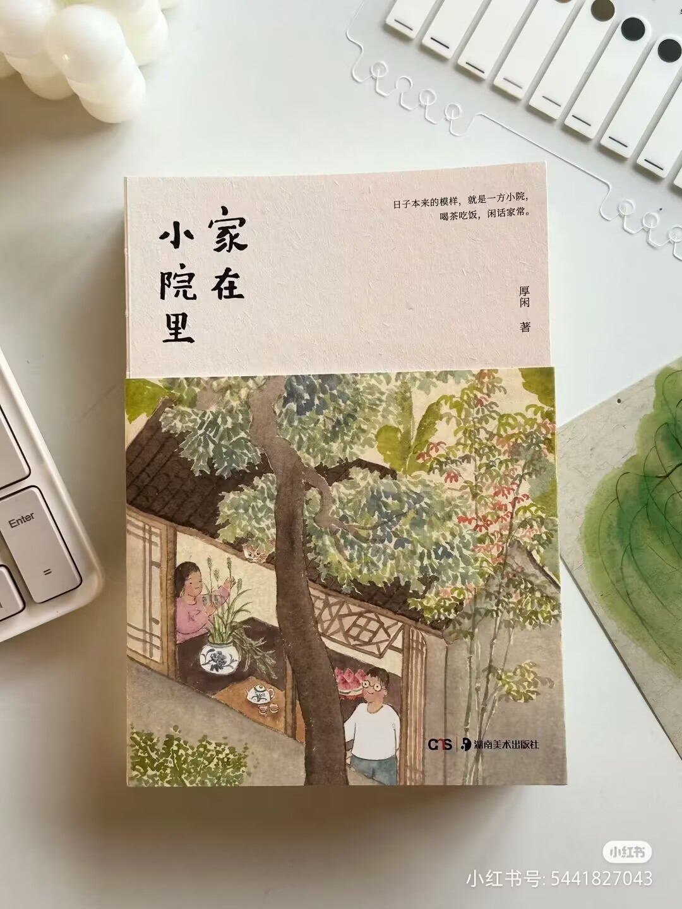

杨绛是著名女作家、翻译家，与钱钟书相伴一生，历经磨难，却始终坚强乐观。她淡泊名利，无私奉献，致力于文学翻译和外国文学研究。她的作品和人生故事展现了优雅与从容，以及对文化的热爱和传承。
冰心是20世纪文学巨匠，中国著名诗人、散文家、翻译家、儿童文学作家、社会活动家。她的“有了爱就有了一切”的“爱的哲学”，既是一种富有感召力的文学创作思想，又是一个凝聚人类共同感受的世界性命题。
鲁迅的散文集《朝花夕拾》是其文学世界的起点，作品主题多围绕故乡、童年和怀人，开创了乡土文学流派
以其短篇散文见长，文风恬淡，平实委婉，看似平淡无味的句子凑在一起充满了韵味
余光中一生从事诗歌、散文、评论、翻译，自称为自己写作的“四度空间”，被誉为文坛的“璀璨五彩笔” [2]。驰骋文坛逾半个世纪，涉猎广泛，被誉为“艺术上的多妻主义者”
汪曾祺被誉为“抒情的人道主义者，中国最后一个纯粹的文人，中国最后一个士大夫。”汪曾祺博学多识，情趣广泛，爱好书画，乐谈医道，对戏剧与民间文艺也有深入钻研
台湾著名的散文家，作品充满禅意，语言富有哲理且清新隽永
他的散文常被认为是“美文”的代表，文字美在于一种熨帖的想象力和现代诗的气质，同时保留了古典诗歌的“诗言有尽而意无穷”的味道






*岁月极美，在于它必然的流逝。春花、秋月、夏日、冬雪
·心若没有栖息的地方，到哪里都是流浪。
·我爱哭的时候便哭，想笑的时候便笑，只要这一切出于自然。
·飞蛾扑火时 ，一定是极快乐幸福的
·在逆风里把握方向，做暴风雨的海燕，做不改颜色的孤岛。
·春天死后还有春天，但至少，有一个五月曾属于我们。
·一半的日子在整理回想，一半的日子在编织期望。别后的每秒都不是现在，我仅仅梦游于往昔和未来。
·逝去的从容逝去，重来的依旧重来，在沧桑的枝叶间，择取一朵明媚，簪进岁月肌里，许它疼痛又甜蜜。
·无聊是对欲望的欲望，我的孤独认识你的孤独。
·美，多少要包含一点偶然
·四方食事，不过一碗人间烟火。
·还没分别，已在心里写信。
·所谓无底深渊，下去，也是鹏程万里。
·我倒并不悲伤，只是想放声哭一场。
·秋天的风都是从往年吹来的